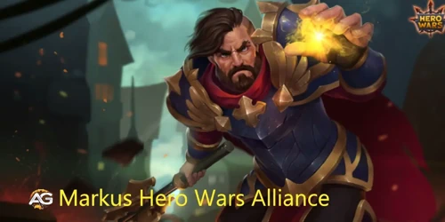
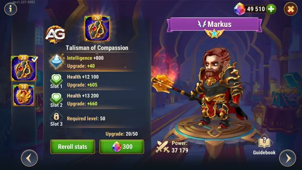
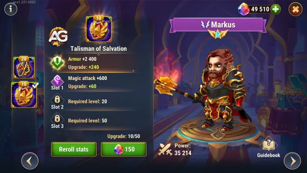
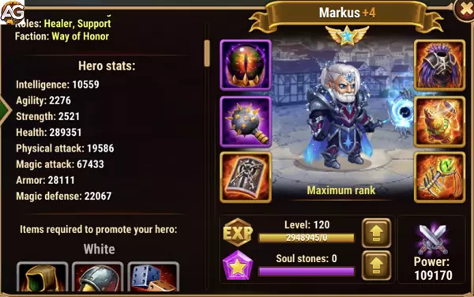

Markus é um dos heróis de cura e suporte mais empolgantes, e ele também se destaca contra a Hydra, pois mesmo após sua morte, ele continua curando os aliados por 42 segundos. Sua primeira habilidade tem o poder de curar o herói com menos vida e conceder um escudo que absorve todo o dano.
Markus é o único herói de suporte no jogo com a capacidade de ajudar sua equipe mesmo após a morte.
No Hero Wars, Markus e Luther formam uma combinação poderosa. Quando Luther invade a formação inimiga, Markus mantém a posição de tanque para a equipe aliada enquanto protege Luther com um escudo e cura.
Mesmo após seu Rework e com todas essas qualidades, ele normalmente não é encontrado em equipes sólidas nas batalhas da Hero Wars Alliance.
| Atributos Principais | |
|---|---|
| Posição: | Linha de Frente |
| Função: | Curandeiro, Suporte |
| Classe de Glifo: | Curandeiro |
| Estatística principal: | Inteligência |
| Facção: | Honra |
| Como conseguir: | Eventos, Baú heroico, Loja da Grande Arena |
| Tier List 2025 | |
| Tier List Geral 2025: | B |
| Tier List de Hidra: | A+ |

O primeiro talismã, o Talismã da Compaixão, fornece inteligência e vida. Esses atributos aumentam a sobrevivência de Markus, permitindo que ele resista tanto a danos físicos quanto mágicos. O aumento de inteligência melhora ligeiramente seu ataque mágico, aprimorando suas habilidades de cura. No entanto, o impacto geral no poder de cura é limitado em comparação com o segundo talismã. Este talismã é mais defensivo, focando em manter Markus vivo por períodos prolongados durante a batalha.

| Espaço | Atributo | Pontos |
|---|---|---|
| 0 | Inteligência | +2000 |
| 1 | Vida | +55000 |
| 2 | Vida | +55000 |
| 3 | Vida | +55000 |
O segundo talismã, o Talismã da Salvação, oferece uma melhoria significativa no desempenho de Markus. Ele fornece ataque mágico e armadura, aumentando tanto seu potencial de cura quanto sua sobrevivência na linha de frente. Com até três espaços disponíveis para ataque mágico, este talismã aumenta enormemente a capacidade de Markus de curar sua equipe de forma eficaz. A armadura adicional também ajuda Markus a resistir a danos físicos de ataques básicos, que são comuns no jogo. Este talismã é mais equilibrado para um curandeiro de linha de frente, atendendo às suas necessidades defensivas e aumentando suas capacidades de cura ofensiva.

No geral, o Talismã da Salvação é a melhor escolha para Markus. Sua capacidade de fornecer tanto um ataque mágico mais alto quanto armadura dá a ele um impulso necessário, permitindo que cure de forma mais eficaz e resista a danos físicos. Este talismã pode potencialmente tornar Markus uma opção mais viável no meta, melhorando sua utilidade e presença nas equipes.
Nos glifos de Markus de prioridade para subir de nível, primeiro ataque mágico para melhorar as habilidades de cura e escudo. Em seguida suba vida, armadura e inteligência para ter mais resistência, e por último ataque físico.
| Prioridade | Glifos |
|---|---|
| 1ª | Ataque Mágico |
| 2ª | Vida |
| 3ª | Armadura |
| 4ª | Inteligência |
| 5ª | Ataque Físico |
| Prioridade | Artefatos |
|---|---|
| 1ª | Livro |
| 2ª | Anel |
| 3ª | Arma |
Nos visuais priorize Armadura, pois Markus se posiciona na linha de frente com tanques, em seguida priorize ataque mágico para melhorar os efeitos das habilidades e por último vida e inteligência.
| Prioridade | Visuais |
|---|---|
| 1ª | Armadura |
| 2ª | Ataque Mágico |
| 3ª | Ataque Mágico |
| 4ª | Vida |
| 5ª | Inteligência |

A habilidade de poder continuar dando suporte a equipe mesmo após sua morte faz de Markus um bom herói para atacar as Hidras, dessa forma, ele sempre vai curar seus aliados até o fim da batalha mesmo tendo pouco poder de herói.
Em conclusão, Markus emerge como uma peça valiosa no quebra-cabeça tático de Hero Wars Alliance. Sua capacidade única de curar e proteger aliados, mesmo após sua própria queda, adiciona uma dimensão estratégica crucial ao campo de batalha. Embora subestimado por alguns, Markus oferece um conjunto de habilidades que podem transformar o curso de uma batalha quando usadas com sabedoria.
Ao compreender profundamente as nuances de suas habilidades e aplicar estratégias avançadas, os jogadores podem aproveitar ao máximo o potencial de Markus. Desde o fortalecimento de alianças com Luther até o gerenciamento preciso do escudo sagrado e o timing estratégico da ascensão, há uma infinidade de maneiras de integrar Markus em equipes vencedoras.
Portanto, da próxima vez que você estiver montando sua equipe para uma batalha crucial, não subestime o poder do apoio incansável de Markus. Com ele ao seu lado, você estará um passo mais próximo de alcançar a vitória em Hero Wars Alliance.
Você gostou do nosso Guia do Markus? Há algo que não entendeu ou gostaria de sugerir mudanças? Convidamos você a se juntar à nossa sessão de comentários na página do Alexandre Games Blog. Não hesite em expressar sua opinião, clarificar suas dúvidas e compartilhar sua sugestões.
Clique no botão abaixo para começar:
 Ártemis
Ártemis Fafnir
Fafnir Galahad
Galahad